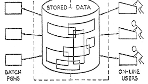

SERVICES
Website
Design
I offer a wide range of services, including comprehensive website design services to help businesses and organizations establish a strong online presence.I use the latest technologies and designs to create visually stunning websites that are easy to navigate and optimized for search engines. With experience in making robust and responsive websites, I can reflect your brand or e-commerce website effectively.I also use optimization techniques such as Search Engine Optimization (SEO) to ensure that your website ranks well in search engine results.

Relational
Relational
Database
Design
I have extensive knowledge and experience in relational database design and usage, specifically in SQL and complex joins . Throughout my career, I have worked on various projects that required designing and implementing complex database structures to store and retrieve large amounts of data efficiently.

Coding Experience
My experience includes proficiency in various programming and scripting languages, such as C/C++, C#, .NET, Python, JavaScript, Bash, and PowerShell. I possess strong analytical skills that allow me to understand complex processes and functionalities. With a proven track record of being a fast learner, I can adapt quickly to new technologies and methodologies. I possess excellent teamwork and interpersonal skills, am adaptable and flexible to changing priorities, and have the ability to think outside of the box in a fast-paced environment..